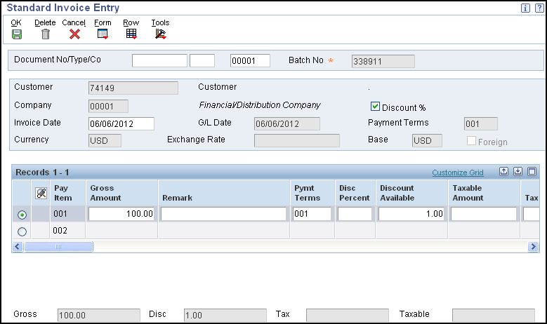
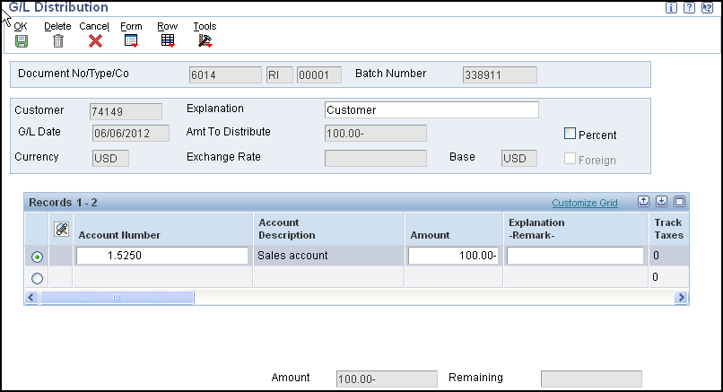

Overview of Accounts Receivable Invoice Processing
Effective management of invoice processing is fundamental to the accounts receivable department. Typically, invoices have to be created before you receive payment from the customer. Most invoices are generated from other systems, such as the JD Edwards EnterpriseOne Sales Order Management system. However, at times you will need to enter and revise invoices for customers directly within the Accounts Receivable system.
Invoice processing consists of three stages:
Invoice entry.
Review, revise and approve invoices for posting.
Post invoices to the general ledger.
Entering an invoice creates a batch type 'IB' and creates unposted records in the following tables:
Batch Control Records (F0011)
Customer Ledger (F03B11)
Account Ledger (F0911)
These batches then need to be reviewed and approved for posting to the Account Balances (F0902) and Account Ledger (F0911) tables
The system assigns document types to invoices and credit memos that you specify in the processing options for the Invoice Entry Master Business Function (MBF) Processing Options program (P03B0011). As standard, an invoice is assigned a document type of 'RI' and a credit memo is assigned a document type of 'RM' but your own user defined document types can also be selected. The document types need to be set up in User Defined Code (UDC) tables 00/DT Document Type - All Documents and 00/DI Document Type - Invoices Only.
NOTE: Country-specific functionality for processing invoices exists for Argentina, Chile, Poland, Peru, Russia, and Venezuela. See JD Edwards EnterpriseOne Globalizations for more information.
Scope
This document is intended for users who are setting up or using the invoice process in the EnterpriseOne Accounts Receivable module
Details
Understanding Invoice Entry Methods
Invoices can be entered using two main methods:
Standard Invoice Entry (P03B11). This method provides the most flexibility and options.
Speed Invoice Entry (P03B11SI). This method provides less flexibility and fewer options than standard invoice entry. However, it provides a quicker way of entering invoice and general ledger information.
To help determine which method of invoice entry you should use, consider these advantages and limitations of Standard and Speed Invoice Entry:
When using Standard Invoice Entry (P03B11) you can:
Enter invoices as quickly because you use two forms to enter invoice and G/L distribution information
When using Speed Invoice Entry (P03B11SI) you can:
Use one entry program to enter both invoice and G/L distribution information.
Enter limited invoice information quickly.
When using Speed Invoice Entry you cannot:
Create installment payments.
Modify, delete, or void invoices.
Set up recurring invoices.
Enter more than one pay item per invoice.
Create or use model journal entries.
Override the G/L offset.
Standard Invoice Entry (P03B11)
Invoice records are created to bill a customer for goods or services. Standard Invoice Entry (P03B11) is a two stage entry. First the invoice is entered, you then need to enter the G/L distribution information. Typically a credit to a revenue account is entered. When you post the invoice, the system debits the offset to an A/R Trade account that you specify in the automatic accounting instructions (AAIs). If you routinely distribute invoices to multiple G/L accounts, you can set up a journal entry to use as a model. The system uses default information that you set up in the customer master (F03012) record when you enter an invoice but some of this can be overridden at invoice entry stage if required.
In addition to entering basic information for a standard invoice, you can enter and revise other types of information. For example, you might want to enter an invoice for multiple line items with different due dates or tax information, or you might want to enter a recurring invoice.
NOTE: You cannot enter partially paid invoices into the system.
The Standard Invoice Entry (P03B11) is accessed from the Customer Ledger Inquiry program (P03B2002). You specify the version of the Standard Invoice Entry program that you want to use in the processing options of the Customer Ledger Inquiry program. The Standard Invoice Entry version is then controlled by the processing options that are set up below for P03B11, and also the Invoice Entry MBF (P03B0011).
Prerequisites:
Set up customer records in Customer Master Information (P03013).
Set the appropriate processing options for Standard Invoice Entry (P03B11) and Invoice Entry MBF (P03B0011).
Set up the necessary AAI item RC (Receivables Class). See AAIs for Accounts Receivable in the Accounts Receivable Implementation Guide for specific information about how the system uses the AAI item RC. These are located at Oracle Technology Network
Setting Processing Options for Standard Invoice Entry (P03B11)
Processing options enable you to specify the default processing for programs and reports.
Display Tab - These processing options specify whether the system displays fields for purchase orders, taxes, and foreign amounts on the Standard Invoice Entry form.
Purchase Order Fields - Specify whether to display the purchase order fields. Values are:
Blank: Do not display fields.
1: Display fields.
Tax Information Specify whether to display tax information for an invoice. Values are:
Blank: Display tax information.
1: Do not display tax information. If you specify not to display tax information, you disable tax processing when entering invoices.
Domestic and Foreign Fields - Specify whether the system displays both domestic and foreign amount fields in the detail area of the Standard Invoice Entry form. Values are:
Blank: Do not display domestic and foreign amount fields.
1: Display domestic and foreign amount fields. These fields will appear on the form:
Domestic Gross Amount
Domestic Discount Available
Domestic Taxable Amount
Domestic Tax
Foreign Gross Amount
Foreign Discount Available
Foreign Taxable Amount
Foreign Tax
Versions Tab - Use these processing options to specify the version of the master business functions for the system to use to process invoices.
Invoice Entry MBF (P03B0011) Version - Specify the version to use for the Invoice Entry MBF program (P03B0011). If you leave this processing option blank, the system uses version ZJDE0001.
Journal Entry MBF (P0900049) Version - Specify the version to use for Journal Entry MBF (P0900049). If you leave this processing option blank, the system uses version ZJDE0001. For more information on the set up of P0900049 please see the General Accounting Implementation Guide for your release. The Implementation Guides are available on the Oracle Technology Network.
Understanding the Invoice Entry Master Business Function (P03B0011)
A master business function (MBF) is a central location for standard business rules about entering documents, such as invoices, vouchers, and journal entries. Master business functions have processing options. You complete the MBF processing options, and then specify the version of the MBF that you want the system to use in the processing options of the entry program.The system uses the Invoice Entry MBF Processing Options (P03B0011) when invoices are created using these programs:
Standard Invoice Entry (P03B11)
Speed Invoice Entry (P03B11SI)
Batch Invoice Processor (R03B11Z1A)
Additionally, invoices are generated from applications in these systems:
Sales Order Management
Contract and Service Billing
Real Estate Management
The individual programs using the Invoice MBF have a processing option to state which version of the MBF will be used. If no version is explicitly specified, the system uses version ZJDE0001.
Setting Processing Options for Invoice Entry Master Business Function (P03B0011)
Processing options enable you to specify the default processing for programs and reports.
Defaults Tab - These processing options specify the default values for the system to use for various fields.
Service/Tax Date Specify the date that the system assigns in the Service/Tax Date field. Values are:
Blank: Use the G/L date
1: Use the invoice date
NOTE: When you enter the invoice, you can override the default value in this processing option.
Pay Status Code - Specify the value that the system assigns in the Pay Status Code field. If you leave this processing option blank, the system uses the value that is set up in the data dictionary for item 'PST' (pay status).
Standard Invoice Document Type - Specify the document type that the system assigns to invoices. The document type that you specify must exist in both user-defined code (UDC) 00/DT Document Type - All Documents and 00/DI Document Type - Invoices Only. If you leave this processing option blank, the system uses document type 'RI'.
Credit Memo Document Type - Specify the document type that the system assigns to credit memos. The document type that you specify must exist in both UDC 00/DT Document Type - All Documents and 00/DI Document Type - Invoices Only. If you leave this processing option blank, the system uses document type 'RM'.
Credit Memo Due Date - Specify the due date to use for credit memos. This processing option was added as of version 8.9 by Bug 12489062 PAYMENT TERMS FOR DEBIT MEMOS - SAR: 5445252. Prior to 8.9, credit memos always used the G/L date as the due date.
Note - If you leave this processing option blank and the credit memo has positive lines, the system will assign the due date accoring to the sign (+ or -) of each line: the G/L date for negative lines and the payment terms date due for positive lines.
Values are:
Blank: Use the G/L date as the due date.
1: Use the due date that is specified by the payment terms code.
Edits Tab - These processing options specify the rules for entering the invoice date.
Invoice Date > Today’s Date - Specify whether the system returns a warning message, an error message, or no message when the invoice date is beyond today’s date. Values are:
Blank: No message
1: Warning
2: Error
Invoice Date > G/L Date Specify whether the system returns a warning message, an error message, or no message when the invoice date is beyond the G/L date. Values are:
Blank: No message
1: Warning
2: Error
Taxes Tab - This processing option specifies whether to allow the entry of value-added tax (VAT) (tax explanation code 'V') on foreign invoices.
VAT on Foreign Transactions - Specify whether to allow VAT on invoices that are entered in a foreign currency. Values are:
Blank: Do not allow VAT
1: Allow VAT
Currency Tab - These processing options specify the rules for using exchange rates.
Exchange Rate Date - Specify the date that the system uses to retrieve the exchange rate. Values are:
Blank: Use the invoice date.
1: Use the G/L date.
Effective Date Edit - Specify whether the system validates the effective date that it uses to retrieve the exchange rate against the general ledger date that you enter on the receipt. Values are:
Blank: Do not validate the effective date.
1: Validate the effective date. The system issues a warning when the effective date of the exchange rate that is retrieved from the Currency Exchange Rates table (F0015) is not in the same period as the general ledger date of the invoice.
Exchange Rate Tolerance Limit - Specify the tolerance limit for changes in exchange rates during invoice entry. If the calculated amount is greater or less than the tolerance amount that you specify, you will receive a warning message during invoice entry. For example, '5' specifies a tolerance limit of 5 percent. If you try to enter an exchange rate that is 6 percent greater or less than the previous rate entered, you will receive a warning message. In this way, the system helps to ensure that the exchange rate that you enter is reasonable, thus alerting you to possible data entry errors. Blank = No tolerance limit
Versions Tab - This processing option specifies the version of the Invoice Interoperability Processing Options program (P03B0190) to run.
Interoperability (P03B0190) Version - Specify the version of the Invoice Interoperability Processing Options program (P03B0190) that the system uses. If you leave this processing option blank, the system uses version ZJDE0001.
How to Enter Standard Invoices (P03B11)

From Customer Ledger Inquiry - Work with Customer Ledger Inquiry (P03B2002) click 'Add' to access Standard Invoice Entry (P03B11):
(OPTIONAL). To assign the document number, document type, and document company, complete the Document No/Type/Co optional fields in the header area. Usually you should let the system assign the document number from Next Numbers (P0002), the document type from the Invoice Entry MBF (P03B0011) processing options, and the document company from the company number that you assign to the invoice. The system assigns this information when you click 'OK' at the end of this task.
Complete the Customer, Company, Invoice Date, and G/L Date fields in the header area.
NOTE: You can use company 00000 for default values such as dates and automatic accounting instructions. You cannot use company 00000 for transaction entries, such as invoice entry.
(OPTIONAL) Override the value in the Payment Terms field, if necessary. These are defaulted from the Customer Master (F03012)
(OPTIONAL) Select 'Additional Info' from the Form menu to access the Additional Information form.
(OPTIONAL) Override the value for any of the fields on the Additional Information form, if necessary, and then click 'OK' to return to the Standard Invoice Entry form.
In the detail area of the Standard Invoice Entry form, complete the Gross Amount field for each pay item. Other field values such as Pymt Terms (Payment Terms) and Discount Available will default once you tab out of the detail line.
(OPTIONAL) In the detail area, complete the Remark, Pymt Terms, Business Unit, Due Date, and G/L Offset fields for each pay item.
Payment Terms: The system completes the Pymt Terms field with the value that is assigned in the header portion of the form, but you can override it for any or all invoice pay items.
NOTE: If you change the payment terms code after you have entered the pay item, you must clear the values in the Discount Available, Due Date, and Discount Due Date fields so that the system can calculate new values.
Due Date: The system calculates the due date based on the payment term that is entered, or you can enter it manually. If you enter a negative invoice (credit memo), the system will use the G/L date as the due date prior to 8.9. From 8.9, a processing option in the master business function (P03B0011) controls how the system calculates the due date for credit memos.
G/L Offset: is defaulted from the Customer Master (F03012) record but can be overridden manually. The G/L Offset is the code that determines the trade account that the system uses as the offset when you post invoices. The system concatenates the value entered to the Automatic Accounting Instruction (AAI) item RC (for Accounts Receivable) to locate the trade account. For example, if you enter TRAD, the system searches for the AAI item RCTRAD (for receivables).
Click 'OK' to access the G/L Distribution form.
On the G/L Distribution form, complete the Account Number and Amount fields in the detail area for each G/L distribution line.
(OPTIONAL) Complete the Explanation -Remark field, and click 'OK'.
NOTE: If you are using Advanced Cost Accounting, you might also need to complete the Cost Object and Object Type fields. See JD Edwards EnterpriseOne Advanced Cost Accounting Implementation Guide. The Implementation Guides are available on the Oracle Technology Network.

Using a Model for the G/L Distribution Entry
To simplify the entry process, you can set up and use model journal entries. You set up model journal entries when you have vouchers and invoices that use the same account distribution. The General Accounting Implementation Guide contains further information on setting up Model Journal Entries. The Implementation Guides are available on the Oracle Technology Network.
Once your model journal entry has been set up, you can select it during invoice entry as you enter the G/L distribution for the transaction, or you can set up a default model for the system to use on the customer master record in Customer Master Information (P03013). To select during G/L distribution entry, select 'Model Journals' from the Form menu on the G/L Distribution form. You can then add or revise the actual journal entry based on the information from the model.
How to Enter Invoices Out of Balance
Normally, two sides of the transaction are entered when you enter an invoice: the invoice and the G/L distribution. Both sides are required to be equal before the transaction can be complete. The "Remaining" field on the G/L Distribution form indicates the amount of additional debit/credit that needs to be entered for the transaction to be in balance. If you leave the G/L distribution form before completing the entry, you lose the information in the invoice and must re-enter the transaction again. However, if you need to save work prior to completing the G/L distribution side, you can exit an invoice out of balance, and then complete the G/L distribution entry at a later date. The General Ledger Post program (R09801) usually requires every transaction in the batch to be in balance, unless the batch header (F0011) record has been specifically marked to 'allow post out of balance'. So you cannot accidentally post the batch in the interim, however as an additional measure you may also wish to set the data selection on the post program to only post batches in balance. This can be done by setting the data selection to include 'Post Out of Balance (F0011) (POB) [BC]' equal to 'N' on the General Ledger Post version of R09801 used to post invoice batches.
Access the Standard Invoice Entry form (P03B11). To enter an invoice out of balance:
Follow the steps to enter a standard invoice.
On the G/L Distribution form, complete the Account Number and Amount fields with available information.
To save the entry out-of-balance, select 'Features' from the Form menu.
On Features, select the 'Allow Exit Out Of Balance' option.
Click 'OK'.
On the G/L Distribution form, click 'OK'.
To complete the entry at a later time, locate the invoice in the Customer Ledger Inquiry (P03B2002) and select the invoice to go to Standard Invoice Entry (P03B11)
Select 'G/L Distribution' from the Form menu.
Complete the G/L Distribution entry.
Click 'OK'.
Credit Memos
On occasion you may need to enter a credit to a customer's account, for example when a customer is overcharged. To enter a credit memo you follow the same steps as you do when entering a standard invoice, but the gross amount is entered as a credit. Generally, a credit memo is assigned a document type of RM but this is controlled by the value entered in the Invoice Entry MBF (P03B0011) processing options. The system uses a separate set of next numbers (P0002) to assign the document number for credit memos than it does for invoices. Prior to release 8.9, the system assigns the G/L date as the due date for credit memos. From 8.9 the credit memo due date can be either the due date that is specified by the payment terms code or the G/L date. Again this is controlled by a processing option on the Invoice Entry MBF (P03B0011).
The system will calculate a discount for the credit memo if the payment term is set up appropriately. The system calculates a negative discount in the Discount Available field. To remove the negative discount, override the Payment Terms field with a payment term that does not calculate a discount and clear the Discount Available field before you click 'OK'.
Invoices with Discounts
You can enter invoices with discounts as incentive to receive payments early. When entering an invoice with a discount, the system calculates the discount and net due dates according to the payment terms that are assigned to the transaction.
Three methods are available for entering discounts:
Using payment terms. You enter an invoice, specifying the payment terms. See How to Set Up Payment Terms and Advanced Payment Terms Within JD Edwards Enterprise One Financial System for further information on payment terms. The system calculates the discount available and due dates from the payment terms. If you want to override the discount amount to zero, you must establish a payment term that does not calculate a discount, then use that payment term on the Standard Invoice Entry form. If you change a payment term to recalculate a new discount amount or due date, remove the system-calculated information by clearing these fields:
Discount Available
Discount Due Date
NetDueDate
Manually entering a discount amount, ensuring the payment term used does not calculate discount automatically. You enter an invoice, specifying the discount available and, optionally, discount and net due dates.
Manually entering a discount percentage, ensuring the payment term used does not calculate discount automatically. You enter an invoice, specifying the discount percentage and, optionally, discount and net due dates.
Speed Invoice Entry (P03B11SI)
As an alternative to Standard Invoice Entry (P03B11), you can use Speed Invoice Entry (P03B11SI) to enter high-volume, simple invoices. When you enter speed invoices, you enter invoice and G/L distribution information on one form. This method works best for invoices that have a single pay item, which includes a single due date and a single tax rate area, and to enter invoices that are not recurring.
When using Speed Invoice Entry, you cannot revise or delete an invoice using P03B11SI.
NOTE : When you use Speed Invoice Entry, the system does not display the G/L Offset field. The system retrieves the value, if one exists, from the customer master record (F03012). If you want to override the value, you must use the Standard Invoice Entry program.
Unlike Standard Invoice Entry (P03B11), Speed Invoice Entry (P03B11SI) can be accessed directly from a user menu and does not need to be accessed from the Customer Ledger Inquiry (P03B2002).
Prerequisites:
Set up customer records in Customer Master Information (P03013).
Set the appropriate processing options for Speed Invoice Entry (P03B11SI) and Invoice Entry MBF (P03B0011).
Set up the necessary AAI item RC (Receivables Class). See AAIs for Accounts Receivable in the Accounts Receivable Implementation Guide for specific information about how the system uses the AAI item RC. These are located at Oracle Technology Network
Setting Processing Options for Speed Invoice Entry (P03B11SI)
Processing options enable you to specify the default processing for programs and reports.
Display Tab - These processing options specify whether the system displays the tax and purchase order fields on the form.
Tax Fields - Specify whether to display the Tax/Rate Area, Tax Expl Code (tax explanation code), Tax Amount, and Taxable Amount fields on the Speed Invoice Entry form. Values are:
Blank: Do not display the tax fields.
1: Display the tax fields.
Purchase Order Fields - Specify whether to display the P.O. No/Type/Co (Purchase Order Number, Type, and Company) field on the Speed Invoice Entry form. Values are:
Blank: Do not display the purchase order fields.
1: Display the purchase order fields.
Service/Tax Date Field - Specify whether to display the Service/Tax Date field on the Speed Invoice Entry form. Values are:
Blank: Do not display the Service/Tax Date field.
1: Display the Service/Tax Date field.
Versions Tab - These processing options specify the version of the program to use when you add an invoice.
Invoice Entry MBF Version (invoice entry master business function version) - Specify the version of the Invoice Entry MBF program (P03B0011) to use. If you leave this processing option blank, the system uses version ZJDE0001.
Journal Entry MBF Version - Specify the version of the Journal Entry MBF program (P0900049) to use. If you leave this processing option blank, the system uses version ZJDE0001. For more information on the set up of P0900049 please see the General Accounting Implementation Guide for your release. The Implementation Guides are available on the Oracle Technology Network.
Defaults Tab - This processing option specifies how the system displays credit amounts.
Display Credit Amounts - Specify whether to display credit amounts as positive or negative numbers. Values are:
Blank: Display credit amounts as negative numbers.
1: Display credit amounts as positive numbers.
Also see section on Setting Processing Options for Invoice Entry Master Business Function (P03B0011).
How to Enter Speed Invoices (P03B11SI)
Access the Speed Invoice Entry form (P03B11SI)
On Speed Invoice Entry, to identify the invoice, complete the following fields:
Customer
Company
Gross Amount
Invoice Date
G/L Date
Complete the following optional fields:
Remark
Pay Status
To override default and system-calculated information, complete the following fields:
BU
Tax Rate/Area
Pay Terms
Tax Expl Code
Pay Instr
Due Date
Tax Amount
Disc Due Date
Taxable Amount
Currency
To enter G/L distribution information, complete the following fields in the detail area:
Account Number
Amount - Depending on how you set the processing options, you enter this amount as a positive or negative number.
Complete the following optional field in the detail area:
Remark
Click 'OK'.
Review and Revise Invoices
Reviewing or Revising Unposted Invoices
Before posting invoice batches you may need to review and revise transactions. There are several ways to view invoice transactions. You can use the Customer Ledger Inquiry (P03B2002) to view all invoices for a specific customer or you can use the Invoice Journal Review (P0011) to view the invoice 'IB' batch and drill down into the invoice records within each batch. Each program will allow you to filter and select your invoice(s)/invoice batch(es) and drill down to the Standard Invoice Entry screen (P03B11) to make any changes as required. Some changes are also possible on posted invoices, such as payment terms and amounts. Any changes to amounts on a posted invoice will reset the batch header to unposted so the changes can be updated to the General Ledger again using the General Ledger Post (R09801).
NOTE: Some fields such as company, G/L date, document number, fiscal year, century are considered key fields in the Customer Ledger (F03B11) and Account Ledger (F0911). Changes to these fields are not permitted, whether the invoice is posted or unposted. If you need to make a change to a key field, the invoice will need to be deleted/voided and re-entered with the correct values.
A further option is to use the Speed Status Change program (P03B114). For more information on the set up and use of Speed Status Change please see the Accounts Receivable Implementation Guide for your release. The Implementation Guides are available on the Oracle Technology Network.
Using Invoice Journal Review (P0011)
Access the Invoice Journal Review form (P0011).
To review or revise unposted invoices:
Select required batch from Invoice Journal Review - Work with Batches screen and click 'OK'
To verify that the amount of the journal entry is equal to the amount of the invoice, review the J.E. Bal (journal entry balanced) field.
To review general ledger information, select G/L Distribution from the Row menu.
Click 'Cancel' to return to Invoice Journal Review.
To revise invoice information, select Invoice Entry from the Row menu.
On Standard Invoice Entry (P03B11), change the information in any field that the system allows.
Select G/L Distribution from the Form menu.
On G/L Distribution, revise the information in any available field and click 'OK'.
NOTE: If you revise an invoice that is posted, the system automatically changes the batch status from posted to the default entry status, either pending or approved, depending on the setting in the A/R constants (P0000). If you revise an amount, you must post the batch again to update the F0911 and F0902 tables. The post processes only the changed transaction.
Using Customer Ledger Inquiry (P03B2002)
To revise unposted invoices:
From Customer Ledger Inquiry (P03B2002), locate the invoice you want to revise, and then click 'Select'.
On Standard Invoice Entry (P03B11), revise the information in any available field, and then click 'OK'.
On the G/L Distribution form, make any required changes to the Account Number and Amount fields, and then click 'OK'.
To revise posted invoices:
From Customer Ledger Inquiry (P03B2002), locate the invoice that you want to revise, and then click 'Select'.
On Standard Invoice Entry (P03B11), revise the information in any available field, and then click 'OK'. If you change the gross amount, you might need to revise the discount amount. The system does not recalculate the discount when you change the gross amount. If you change the gross amount, the system displays the G/L Distribution form automatically on clicking 'OK'.
On the G/L Distribution form, complete the Account Number and Amount fields on a new grid line to create a balancing entry if you have changed the gross amount on the previous step. Enter the amount as a credit.
To revise general ledger information only, on Standard Invoice Entry, select 'G/L Distribution' from the Form menu, revise the desired fields, and then click 'OK'.
NOTE: If you revise an invoice that is posted, the system automatically changes the batch status from posted to the default entry status, either pending or approved, depending on the setting in the A/R constants (P0000). If you revise an amount, you must post the batch again to update the F0911 and F0902 tables. The post processes only the changed transaction.
Delete and Void Invoices
NOTE: To void or delete a paid or partially paid invoice, whether the invoice itself is posted or not, you must first void or delete the customer’s receipt(s) that paid the invoice, post the void of the receipt, and only then proceed to void or delete the invoice.
You can delete an unpaid invoice before it is posted. When you delete an invoice, the system does not keep a record of the deletion; the record is removed from the system. The system removes deleted invoices from these tables:
F03B11
F03B112
F0911
If the batch does not contain any other invoices, the system also deletes the Batch Control Record; otherwise, it updates the record.
NOTE: You cannot delete or void invoices with these document types: R1, RU, RB, and R5. These types of invoices are generated from the receipt system and have a batch type of RB, not IB. The system creates these documents with a posted code of D, regardless of whether the receipt batch is posted.
Deleting an Invoice
To delete an unposted invoice, locate the invoice that you want to delete on the Customer Ledger Inquiry form (P03B2002) and click 'Delete', and then click 'OK' to confirm the deletion.
NOTE: Once a invoice is voided, you are not able to undo the void or "void a void". You must post the void and re-enter the invoice in again.
Deleting an Invoice Pay Item
You must delete invoice pay items from Standard Invoice Entry (P03B11). If you delete an invoice pay item from Customer Ledger Inquiry (P03B2002), the system deletes all associated invoice pay items. Therefore, use Customer Ledger Inquiry to select the invoice pay item, and then click 'Select'. On Standard Invoice Entry, select the invoice pay item and click 'Delete', and then click 'OK' to confirm the deletion.
Voiding a Posted Invoice
To remove a posted invoice or invoice pay item from the general ledger, you must void it and then post the batch again. You cannot delete a posted invoice.
When you void an invoice, the system:
Updates the gross amount to zero.
Removes the posted code from the invoice.
Updates the payment status code to P (paid).
Creates a record in the F03B112 table as an audit trail for the change in gross amount.
Updates the A/R Post Status field (ISTR) in the Customer Ledger record (F03B11) to 1.
The system displays the value of this field in the Revisions Made column in Customer Ledger Inquiry. After you void an invoice, you must post the batch again. To void a paid or partially paid invoice, you must first void the customer’s payment.
Voiding an Invoice
To void a posted invoice, open the Customer Ledger Inquiry form (P03B2002) and take the following steps:
Locate the invoice that you want to void, and then click 'Delete'.
NOTE: If you select an invoice with multiple pay items, the system voids all pay items.
On Confirm Delete, click 'OK'.
On Enter Void Information, complete the Void G/L Date and Invoice Revision Code fields, and then click 'OK'.
Void G/L Date - Enter the date to which the system posts voided transactions. Do not enter a G/L date for a previous or future period.
Invoice Revision Code - Enter the code that identifies the reason that an invoice pay item was voided.
On Void Confirmation, click 'OK' to confirm the void.
To verify the void, locate the voided invoice on Work With Customer Ledger Inquiry, and click 'Select' to access Standard Invoice Entry.
To review the amounts that the system reversed in the Customer Ledger, select 'Invoice Revisions' from the Row menu on Standard Invoice Entry.
To review the reversing entries that the system creates in the F0911 table when you void an invoice, select G/L Distribution from the Form menu on Standard Invoice Entry.
Voiding an Invoice Pay Item
You must delete invoice pay items from Standard Invoice Entry (P03B11). If you delete an invoice pay item from Customer Ledger Inquiry (P03B2002), the system deletes all associated invoice pay items.
To delete or void an invoice pay item, access the Work with Customer Ledger Inquiry form (P03B2002). Select the invoice pay item you want to void and click 'Select':
Access the Standard Invoice Entry form.
Select the invoice pay item that you want to void, and click 'Delete'.
On the Confirm Delete form, click 'OK'.
On the Enter Void Information form, complete the Void G/L Date and Invoice Revision Code fields, and click 'OK'.
On the Void Confirmation form, click 'OK' to confirm the void.
On the G/L Distribution form, complete the Account Number and Amount fields on a new detail line to create a balancing entry. Enter the amount as a credit.
General Ledger Posting
After you review and approve invoices, you post them to the general ledger. When you submit a batch of invoices for posting, the system:
Selects unposted, approved invoices and validates each transaction.
Creates automatic offsets to the A/R trade and tax accounts in the Account Ledger (F0911).
Posts accepted transactions to the Account Balances table (F0902).
Marks the invoices as posted in the Customer Ledger (F03B11), Invoice Revisions (F03B112), and Account Ledger (F0911) tables.
Sends workflow messages to the work center.
Prints a general ledger post report, a post detail error report, or both.
Invoicing Enhancements from Release 8.9 (With ESU for XE and ERP8.0)
Business Unit Enhancement
An enhancement to the Standard Invoice Entry program (P03B11) allows specification of a business unit for each invoice pay item, instead of one business unit for each invoice. For systems that interface with Accounts Receivable, such as Contract Billing, Service Billing, and Real Estate Management, business unit values for each pay item are accepted. The enhancement will be included in 8.9 (via <Bug 12490061>). This functionality may be added to Xe environments by applying the ESU for <Bug 10757719> and to 8.0 environments by applying the ESU for Bug 10757750<.
Prior to this enhancement, the business unit assigned to the customer's Address Book record was retrieved for use on the invoice. This value could be overridden during invoice entry by accessing the Additional Information form. With this enhancement, the business unit is displayed in the detail area of each pay item. Choose to use the value retrieved from Address Book, override the value for all pay items by assigning a different value on the Additional Information form, or override the value for one or more pay items individually.
Updating the Account ID (AID)
When an invoice is created, the Account ID field (AID) of the Customer Ledger record (F03B11) is updated based on the account derived from the Automatic Accounting Instruction (AAI) item RCxxxx (where xxxx is the G/L offset). The AAI is selected based on the information provided on the invoice (currency, G/L offset, and company) and the information specified on the AAI.
If no business unit is specified on the AAI item, the business unit from the invoice pay item, in conjunction with the object and subsidiary specified on the AAI, is used as the offset account when the invoice is posted.
Revising the Business Unit
The value of the business unit can be changed for any unposted invoice pay item, however, once the invoice is posted, it cannot be modified using Standard Invoice Entry. This includes invoices that were posted and then revised. The posted code is removed on posted invoice records that are revised and the Revisions Made field (ISTR) is updated to 1. If the posted code (PC column) is D or the ISTR field (Revisions Made column) is 1, no changes to the business unit are allowed.
The value of the business unit can be changed using Speed Status Change (P03B114), however, the AID field is not updated based on the new value. For companies that use the business unit field for reporting purposes, this allows a change without altering the accounting.
Batch Invoice Processing
It is possible to process batch invoices that have a multiple business units specified. The business units must exist in the Business Unit Master table (F0006).